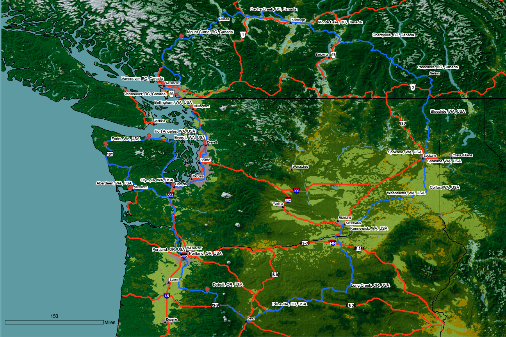
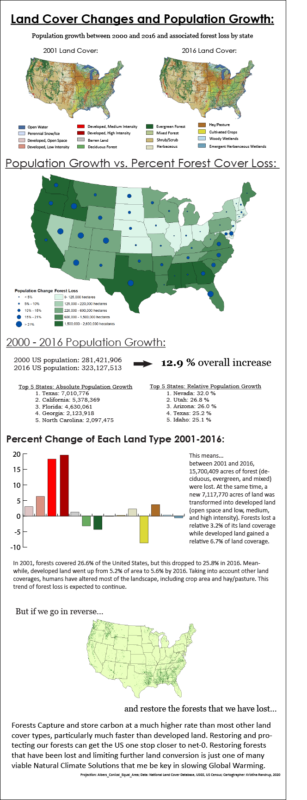

Ultimate PNW Bike Route

Fastest Known Time of the Year North America Winners

Washington State Parks

King County, WA demographics

US National Land Cover changes infographic

Long Trail, FKT of the Year, M2

Wonderland Trail, FKT of the Year, F4

Washington State Basics

Puget Sound Ferry Routes

Puget Sound Military Bases